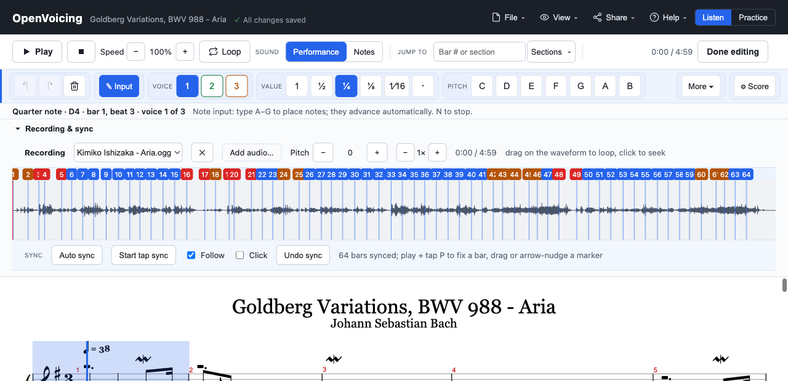

Open-source living sheet music
OpenVoicing turns a score into something you can practice with and share, built on an open file format you own, not a service you rent.
The player below is a real OpenVoicing embed: Bach's Goldberg Aria, notation synced to a recording.
The same piece is fully editable: notes, voices, ornaments, dynamics. It's a real editor, not a viewer.

Every piece is a self-contained .ovb file holding the score, its recordings, and the sync map. You own it, host it anywhere, and the player is just static files. No account, no lock-in.
Slow a passage down without changing pitch, loop it, add a count-in, and follow a metronome. The tools you actually reach for when learning a piece.
How to practice with it →Line a real performance up with the score, bar by bar, so playback follows the notation, and you can loop and slow the real thing. It works with an audio file or a YouTube video (a lesson or a performance), the notation following along as it plays.
Play along with a recording →Import MusicXML or Guitar Pro, edit notes, voices, ornaments, and dynamics, then export a portable bundle that plays the same everywhere, forever.
Import and edit your own music →Embed anywhere
Host a bundle anywhere static, drop in the script, and point a div at it. That's the whole integration. The same player you see above.
<script src="https://your-host/openvoicing-embed.js"></script> <div data-openvoicing-bundle="https://example.com/tune.ovb"></div>How to publish and embed →
Static hosting, an open format, an embed SDK.
Publish and embed →